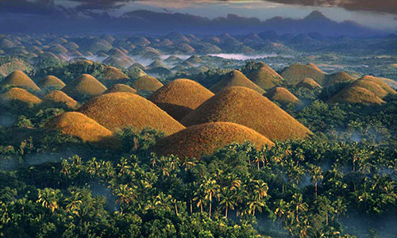
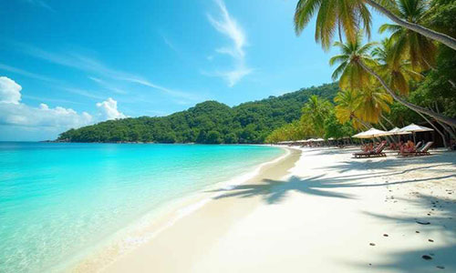
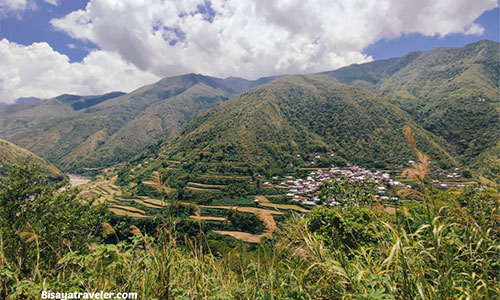

Dream Vacations |
||
Chocolate Hills (Mga Burol na Tsokolate)located on the islnd of Bohol in the Philippines. |
 This place is a geological formation in the Philippines province of Bohol. There is a minimum of 1,260 hills and possibly up to 1,776 spread over an area of more than 50 square kilometers. The hills are covered in green grass that turns into a chocolate brown during the dry season. |
To get to this place, you would take a plane ride into Bohol-Panglao International Airport or take a ferry from Cebu to Tagbilaran. Then you would take a bus from Dao Terminal to Carmen, then a motorcycle taxi (habal-habal) to the complex. It’s better to travel in dry weather, if you want to see the hills fully brown. |
Boracay (Bora) – White Beachis a small island in the Philippines located in the Western Visayas region. |
 Boracay is a resort island in the Western Visayas region of the Philippines, located 0.8 kilometers off the northwest coast of Panay Island. It has a total land area of 10.32 square kilometers, under the jurisdiction of three barangays in Malay, Aklan, and had a population of 37,802 in 2020. This place is famous for being one of the world’s top destinations for relaxation. |
To get to this area, you would need to fly into Caticlan Airport or Kalibo Airport, take a land transfer to Caticlan Jetty Port, pay terminal, and take a 15-minute boat ride to Cagban Port in Boracay. Then from there, take an e-trike to your hotel, located near Stations 1, 2, or 3 along White Beach. |
Buscalan – Tattoo Villagelocated within Kalinga Province, North Luzon, Philippines. |
 This historical village is where the legendary, Whang-Od lives and she is known for her traditional Kalinga tattoos for Butbut people. As a traditional Kalinga tattooist (mambabatok), she has done tellings and chants while doing tattoos. Every design she creates contains symbolic meanings specific to the mambabatok culture. The tattoo ink she uses is composed of indigenous materials, usually a mixture of charcoal and water that is tapped into the skin using a thorn from a calamansi or pomelo tree. |
To get to this village, you would need to book a guided tour package. First, you need to fly to Manila, Philippines then from there, you need to take an overnight bus to Bontoc or Tabuk. This is a jeepney ride to Bugnay/Butbut, a motorbike taxi (habal–habal) to the drop-off point. Finally, there is a 30-45 minute hike. |